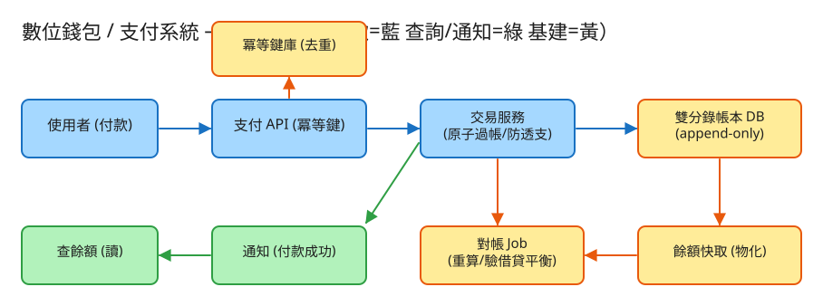

C 一致性/交易 看故事就懂 輕鬆讀 25 分鐘
想像你開了一家記帳超嚴格的銀行。每天有上億筆「A 付錢給 B」， 你要保證一件最簡單卻最難的事：錢一塊都不能多、不能少、不能憑空消失。
數位錢包 / 支付系統就是在做這件事。它的難，難在四點：手滑點兩次不能扣兩次、餘額不夠不能硬扣、 同一筆轉帳要嘛全成要嘛全敗、而且整本帳隨時加起來都要對得上。
很多人第一個直覺是：「錢包不就是每個人一個 balance 數字，付錢就減、收錢就加？」
聽起來合理，但這正是會出大事的地方。關鍵在一個你早就懂的生活經驗——
而且會計記帳有個鐵律：有借必有貸、借貸金額相等。A 付給 B 100 元，記成兩行： 「A 少 100（借）」和「B 多 100（貸）」，兩行金額一樣、方向相反。這叫雙分錄。
這樣做的好處超大：因為每筆交易都是「從一個口袋搬到另一個口袋」，全系統的錢加起來永遠是同一個數字。 哪天總額對不上，你立刻知道「有 bug 或有人動了手腳」——這叫守恆，是金融系統的安全網。
💭 停一下：如果用「便利貼」式的餘額欄位，兩筆轉帳同時想花你帳戶裡同一筆錢，會發生什麼事？
別被「支付系統」嚇到。錢的事說穿了就是闖 4 關，每一關都在守護「錢不會算錯」：
A 轉 B 100 元，系統不是把 A 的數字減 100、B 的數字加 100 就算了。 它會在帳本上「只往下加、永不塗改」地寫兩行：A 借 100、B 貸 100。
👉 這帶來一個威力：「餘額」其實不是存起來的，而是把帳本所有行加總「算出來」的。就算系統當機，只要帳本還在，餘額隨時能重算。
網路很不可靠。你按下「轉帳」，畫面卡住，你又按了一次——錢不能被扣兩次。
系統的做法：每筆轉帳你帶一張獨一無二的「冪等鍵」（idempotency key，就是那個座位號）。 系統處理前先看「這把鑰匙用過沒？」——用過就直接回上次的結果，不再扣款。 這叫冪等：同一個動作做幾次，效果都跟做一次一樣。
你只有 100，卻想轉 150——系統必須擋下來，餘額絕不能變負數。聽起來理所當然，難在「兩筆同時來」。
工程上的招數叫「條件更新」：扣款時下一道命令「餘額夠才扣，不夠就一毛都別動」， 由資料庫保證這個「檢查＋扣款」是一口氣做完、中間插不進別人。第二筆一看不夠，就被乾淨地拒絕。
跑得再快，也要賠得起——系統要能隨時證明「錢一塊都沒少」。
因為有了關卡 1 的「有借必有貸」，這個對帳才做得到——全系統的錢理論上永遠守恆，差一塊都會被抓出來。
工程上的「取捨」聽起來很抽象。換個方式記：錢的系統最怕四件事，每個設計都是為了避開某個「怕」。

✏️ 用 Excalidraw 開啟編輯（diagram.excalidraw）白話導讀，跟著付款的旅程走一遍：
看完上面，這些詞你其實都已經懂了，這裡只是把「工程術語 ↔ 白話」對起來，Part 2 會用到：
| 工程術語 | 白話解釋 |
|---|---|
| 雙分錄帳本 (double-entry ledger) | 會計記帳法：每筆交易記兩行「有借必有貸」，金額相等方向相反 |
| 分錄 (entry) | 帳本上的一行：誰、借還是貸、多少錢 |
| append-only | 「只能往下加、不能塗改」的帳本，像存摺 |
| 冪等 (idempotent) | 同一個動作做幾次，效果都跟做一次一樣 |
| 冪等鍵 (idempotency key) | 每筆付款獨一無二的「票根存根號」，用來認出重送 |
| 原子 (atomic) | 一組動作「全成或全敗」，不會只做一半 |
| 交易 / 交易 (transaction) | 把多個動作綁成一包，全成或全敗的那層保護 |
| 防透支 | 餘額不夠就不准扣，餘額永不為負 |
| 條件更新 | 「夠才扣，不夠一毛別動」的一口氣指令 |
| 雙花 (double-spend) | 同一筆錢被花兩次（兩筆同時扣） |
| 對帳 (reconciliation) | 定期把整本帳重算、驗證「借=貸」、餘額對得上 |
| 守恆 | 全系統的錢加總永遠是同一個數，不多不少 |
| 物化 / 快取 | 把「算好的餘額」先存一份，查餘額才不用每次掃全帳 |
| 沖正 (reversal) | 記錯了不塗改，而是再記一行相反的把它抵銷 |
| TPS / QPS | 每秒幾筆交易／請求（衡量「多忙」的單位） |
| 分片 (sharding) | 資料太大，拆給好幾台機器分開存 |
我們估幾個關鍵數字（數字不必背，重點是感受它的「形狀」）：
| 估什麼 | 大概數字 | 所以呢？ |
|---|---|---|
| 每天多少筆付款（寫） | 1 億筆/日 ≈ 每秒 ~1,200 筆，尖峰再 ×10 | 寫入要扛得住，且每筆都得正確 |
| 帳本長多快 | 每筆至少 2 行分錄 → 每天 ≥ 2 億行 | 帳本只增不刪，一年十幾 TB，要分冷熱 |
| 查餘額（讀）多頻繁 | 讀遠多於寫，可達 50:1 | 查餘額要快 → 存一份算好的「餘額快取」 |
| 付款要多快回應 | p99 < 200 毫秒 | 付款是關鍵路徑，不能讓人等 |
💭 停一下：查餘額比付款頻繁這麼多倍，如果每次查餘額都去「把整本帳加總一遍」，會怎樣？
這題只要記住幾張「點餐單」，最重要的是第一張（轉帳）一定要帶冪等鍵：
① 轉帳 / 付款（最重要，必帶冪等鍵）
POST /transfers
附上一把鑰匙：Idempotency-Key: 9f1c2e7a-... ← 你產生的、獨一無二
給我：{ 從誰 from, 給誰 to, 金額 amount:1500（分）, 幣別 }
我回：201「成功，這是交易編號 txn_123，借貸兩行如下」同一把鑰匙再送一次 → 我回 200 + 上次那筆 txn_123，不再扣款。這就是「票根存根」在運作。若同鑰匙卻帶了不同金額？我回 409「衝突」——一把鑰匙只能對應一筆交易，不准冒充。
② 儲值 / 提領（其實也是轉帳：系統金庫 ↔ 你）
POST /topups { to:"你", amount:10000 } ← 充值
POST /withdrawals { from:"你", amount:3000 } ← 提領把「系統金庫」也當成一個帳戶，儲值就是「金庫 → 你」、提領就是「你 → 金庫」。這樣連充值提領都遵守「有借必有貸」，全帳照樣守恆。
③ 查餘額（很頻繁 → 讀那份算好的快取）
GET /accounts/{id}/balance → { available:8500, currency:"TWD" }
④ 看對帳單 / 帳本（只追加、可審計）
GET /accounts/{id}/ledger → { entries:[ 一行一行的借貸... ] }每一行記：分錄ID、這筆轉帳的編號 transfer_id、是誰的帳戶、借(D)還是貸(C)、多少錢、時間。
每個帳戶一列：帳戶ID、餘額(整數分)、幣別、版本號。
每把用過的冪等鍵一列：鑰匙、請求內容的指紋、對應的交易編號、狀態(處理中/已完成)、何時過期。
| 哪裡會塞車 | 怎麼拓寬 |
|---|---|
| 單一資料庫寫不下這麼多交易 | 依帳戶 ID 分片：不同人的帳分到不同機器 |
| 熱門帳戶（金庫、人氣商家）被狂扣狂加 | 把它的計數拆成好幾桶分開記，再定期合併 |
| A、B 不在同一台機器，無法用「一個交易」綁住 | 用 Saga（分段做＋出錯就補償沖正），靠冪等＋對帳兜底 |
| 查餘額的請求把主資料庫打爆 | 餘額物化＋快取（Redis），讀寫分開 |
| 帳本只增不刪，越長越大 | 冷熱分層＋定期存「快照」，重算時不用從頭加 |
| 鑰匙簿無限累積 | 設到期時間自動回收（留夠重試窗口即可） |
「Part 1 的四個怕」是核心。這裡補幾個常被面試官追問的：
讀十遍不如玩一遍。這題有一個真的可以跑的小程式，讓你親眼看到「雙分錄＋冪等＋防透支」：
# 啟動（在這題的 demo 資料夾裡）
cd demo
php -S localhost:8017 -t public
# 然後瀏覽器打開 http://localhost:8017玩過 demo 了，來掀開引擎蓋看看「那幾關到底是哪幾段程式做的」。 好消息：核心只有兩個小檔，剛好對應前面講的工作。不用會 PHP，我把程式翻成白話、只留關鍵那幾行，看註解就懂。
記帳的靈魂：A 轉 B 100 元，不是改兩個數字，而是在帳本「只往下加」地寫兩行——A 借（D）、B 貸（C），金額一樣、方向相反。
function 寫兩行分錄(轉帳編號, 出錢方, 收錢方, 金額) {
帳本[] = { 轉帳編號, 帳戶:出錢方, 方向:'D'(借), 金額 } // ← 第一行：出錢方「借」
帳本[] = { 轉帳編號, 帳戶:收錢方, 方向:'C'(貸), 金額 } // ← 第二行：收錢方「貸」
// 兩行金額相等、方向相反 → 這筆的淨額剛好是 0
}這就是「有借必有貸」。因為每筆都這樣寫，全帳的「借總和」永遠等於「貸總和」——錢只是從一個口袋搬到另一個口袋，總額憑空生不出也滅不掉。連開戶初始入帳都走這套（系統金庫「借」、你的帳戶「貸」），所以全帳照樣守恆。
扣款的關鍵一行。要扣之前先算「扣完會不會變負數」，會變負就一毛都別動、直接回報失敗。
function 改餘額(帳戶, 變動額) { // 扣款時變動額是負數，例如 -150
新餘額 = 現在餘額 + 變動額
if (新餘額 < 0)
return 失敗; // ← 防透支：會變負就拒絕，餘額永不為負
餘額[帳戶] = 新餘額 // 夠才真的扣
return 成功;
}真實系統會把這寫成一句條件式 SQL：UPDATE 帳戶 SET 餘額=餘額-150 WHERE 餘額>=150，由資料庫保證「檢查＋扣款」一口氣做完、中間插不進別人（就是前面說的「窄門」）。受影響列數 = 0 就代表餘額不足、扣款被乾淨地拒絕。
這是防手滑的心臟。每筆轉帳帶一把獨一無二的冪等鍵，真正動錢之前先查「這把鑰匙用過沒？」
function 轉帳(出錢方, 收錢方, 金額, 冪等鍵) {
if (鑰匙簿裡有這把冪等鍵) {
if (這次的請求內容 != 上次登記的內容)
return 衝突; // ← 同鑰匙卻換了金額 → 不准冒充
return 上次的結果; // ← 用過了：直接回放，不再扣款！
}
// ↓↓ 沒用過，才真的進去動錢（接第 4 段）↓↓
}手滑按兩次、網路自動重送，第二次一進來看到「這把鑰匙已登記」，就直接回上次那筆 txn 的結果，餘額一毛都不會再少。這就是「轉帳按兩次只扣一次」——做幾次 = 做一次。
💭 停一下：為什麼「扣款失敗（餘額不足）」時，不要把這把冪等鍵寫進鑰匙簿？
確認鑰匙沒用過、餘額也夠，才真的動錢。關鍵是這三件事綁在同一道鎖裡，全成或全敗：
上鎖(); // ← 窄門：整段過帳序列化，同一帳戶一次只放一筆進來
try {
if (改餘額(出錢方, -金額) == 失敗)
return 餘額不足; // 防透支擋下，這裡直接返回（不寫鑰匙）
改餘額(收錢方, +金額) // 對手方入帳
寫兩行分錄(新交易編號, 出錢方, 收錢方, 金額) // append 借/貸兩行
鑰匙簿[冪等鍵] = 這筆結果 // ← 成功了才登記鑰匙，供日後重送回放
} finally { 解鎖(); }「扣出錢方 → 加收錢方 → 寫借貸兩行」三步在同一把鎖內一起完成：要嘛全做、要嘛全不做，絕不會「A 扣了、B 沒加」把錢扣一半蒸發掉。這把鎖就是 Part 1 講的「窄門」，也讓兩筆同時搶同一帳戶時排好隊、不會雙花。
最後的安全網：把帳本從頭加總一遍，驗證「全部的借 = 全部的貸」，而且重算的餘額要跟「存著的餘額快取」對得上。
function 對帳() {
借總和 = 貸總和 = 0
foreach (帳本每一行 分錄) {
if (分錄.方向 == 'D') { 借總和 += 金額; 重算餘額[帳戶] -= 金額 } // 借=出錢=減
else { 貸總和 += 金額; 重算餘額[帳戶] += 金額 } // 貸=收錢=加
}
守恆嗎 = (借總和 == 貸總和) // ← 全帳守恆：借=貸
foreach (每個帳戶) 比對(重算餘額 vs 餘額快取) // ← 算出來的 要等於 存著的
}因為關卡 1 每筆都「有借必有貸」，這裡的「借總和 = 貸總和」理論上永遠成立；一旦不成立，就代表有 bug 或被竄改，馬上告警。這就是「總額不憑空生滅」能被「證明」出來的根據——像店長每晚盤點收銀機。
| 關卡（前面講的） | 哪個檔 | 關鍵那段 |
|---|---|---|
| ① 有借必有貸記帳 | Ledger | 寫兩行分錄()（一借一貸） |
| ② 手滑兩次只扣一次 | TransferService | 動錢前的「查鑰匙」 |
| ③ 餘額不夠不准扣 | Ledger | 改餘額() 的那行 if < 0 |
| ③+ 全成或全敗 | TransferService | 鎖內「扣→加→記帳」一包 |
| ④ 全帳對得上 | Ledger | 對帳()（借=貸＋餘額比對） |
👉 重點：真實系統會把「JSON 檔 + 檔案鎖」換成「強一致資料庫的 DB 交易 + 帳本表 + 冪等鍵索引」， 但上面這幾段判斷邏輯一字都不用改：雙分錄（有借必有貸）、冪等（按兩次只扣一次）、防透支（夠才扣）、守恆（借=貸）。所以讀懂這個小 demo，你就讀懂了這題的核心。
先不要看答案，自己用講給朋友聽的方式回答看看（講得出來才是真的懂）：
數位錢包 = 一本永遠對得起來的會計帳本。錢只在口袋間搬，不憑空多也不憑空少。
4 個關卡：① 有借必有貸記帳本 → ② 手滑兩次只扣一次（冪等）→ ③ 餘額不夠不准扣（防透支）→ ④ 全帳加總對得上（對帳守恆）。
4 個怕：怕重複扣款（冪等鍵）、怕憑空多花（條件更新防透支/雙花）、怕扣一半（同交易原子）、怕算不清（只追加＋對帳）。
工程細節一句話：金額用整數分、寫路徑保正確讀路徑求快 → 用「點餐單(API)」溝通、轉帳必帶冪等鍵 → 三本筆記本（帳本/帳戶/鑰匙）＋帳本是真相 → 找出塞車環節（分片/快取/Saga）各自拓寬。
想看更精簡、面試速查用的版本？👉 前往完整版（同樣內容的工程速查格式）。